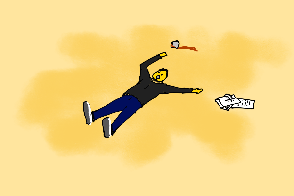

The Medium is the Client
Let’s talk about an important element of a life of gigwork: the deliverable. Just as T. S. Eliot’s J. Alfred Prufrock measured out his life in coffee spoons, we gig workers measure out our life in deliverables. Almost everything of importance in a gig can be inferred from just two pieces of data: the medium of delivery, and the compensation structure.
Why? Because of what I call the fundamental principle of gigwork: The Medium is the Client.
Don’t believe me? Neither did Agent Lestrode of the FBI’s G-Crimes division (whom we first met in The Two Shadows of the Hero[1]) until I applied the principle to help him find a murderer.

It all began when Lestrode and his senior partner, Agent Jane Jopp, invited themselves over one evening to get my advice on a case and drink my bourbon.
“So, how can I help Gig Crimes this fine evening?” I asked.
Jopp said, “It’s a pure armchair analysis case full of mediocre, inconclusive evidence that points nowhere. Lestrode is taking the lead on this one, so I’ll let him explain, but it’s exactly your speed. I’m just here to listen and drink some of your fine bourbon.”
I handed them their drinks. Lestrode settled into the armchair with a satisfied smirk.
“So, Rao, you know how you’re always saying the medium is the client? Here’s your chance to prove it.”
“I’ll be glad to try,” I said politely.
“It’s a very clean, cut-and-dried homicide, and we have absolutely no idea how to crack it. Practically a locked-library whodunit, except it was a small office building. Victim was the CEO of a medium-sized fine chemicals company, Thomas Turtleneck. Public company, but not worth much. Stock’s been in decline for years, and they’ve shrunk gradually through divestments. Would probably have ended up delisted if they’d continued on this course.”
“I get the picture, I’ve worked with companies like that.”
“Turtleneck was working alone in the building on a Saturday. No other employees badged in that day, but he had four consultants come in for meetings in the morning. Back-to-back.”
“Alone, but with consultants. That’s the loneliness of leadership I suppose. Sounds like some high-urgency critical business engineering was going on.”
“I’ll get to that. All of them had badged in and out by lunchtime. Nobody else entered the building after 1 PM, and Turtleneck did not leave either. The janitor found him at midnight, dead on the floor of his office. Body was still warm. He’d been dead less than a couple of hours. Cyanide in his bourbon.”
“And I presume, since G-Crimes is on the case, that the only suspects are the four consultants?”
“Yes. All four had the means and the opportunity. The cyanide was from the small testing lab right next to the offices. And we have surveillance footage of him drinking from the same bottle late Friday night, working alone. Apparently drinking alone and working late was widely known to be a habit of his. So the cyanide had to have been introduced sometime on Saturday.”
“What about the employees? And the janitor?”
“No sign of breaking and entering, no other badges in the log. The janitor alibied out.”
“And suicide ruled out, I assume? What was he doing in the office alone on a Saturday anyway?”
“Yes, no chance of suicide. He was working on swinging the biggest deal of his tenure as CEO, and as far as we can tell, it was in the bag. He was working on taking the firm private. Was in talks with a private equity outfit, and was planning on aggressive cost controls and layoffs on the one hand, and a couple of pretty bold new growth initiatives on the other. Big two-pronged turnaround play.”
I closed my eyes and thought for a while. Four consultants, one critical transition period for a company, one dead CEO.
Who wanted him dead, and why?
“So who were these consultants and what were they doing with your vic on a Saturday?”
Four Deliverables and a Corpse
“At 8:00 AM he met with Moe Dell. Quant and financial modeling guy. They went over an Excel financial planning model for two hours. Reviewed various final tweaks Turtleneck had asked for. Dell says Turtleneck basically signed off on the work, and he left around 10. His gig would have ended next week once the deal with the PE firm was signed. The model was for the COO of the PE holding company. Once the deal was done, the plan was to use it for quarterly reporting, tracking progress against targets, and calculating stock incentives.”
“Would Dell have been maintaining the model?”
“No, he was set to receive the last 25% of the payment due to him upon delivery of the final model. In fact, he sent the final model with the last couple of changes, along with his final invoice, later that Saturday. Just a couple of hours after their meeting. As far as he knew, he was done. At least judging by his final email to Turtleneck.”
“Did they have a good relationship?”
“He didn’t have much of a reaction to the news. Just stoic professional regrets etc. Samurai-ronin type. Seemed philosophical about probably having trouble getting his last invoice paid.”
“Alright, who was next?”
“10 to 11:30, Turtleneck met with Penny Pilot, an M&A deal consultant specializing in the fine chemicals industry. They went over the final paperwork on the deal. She’s been supporting him on diligence and working with him and his lawyers for months on the valuation and deal terms.”
“What’s her stake?”
“She was billing by the day. At a pretty sweet rate too: $12,000 a day. But that was pocket change compared to what she was angling for. They’d been talking about her coming onboard in some capacity after the deal, with stock participation. Potentially worth millions. She was actually the one who brokered the initial conversation. She’d worked with both Turtleneck and the PE firm before. One of those industry insiders who floats around making deals happen. Mostly works for cash, occasionally takes a piece of the action too.”
“And her reaction to the news?”
“Seemed pretty upset. This was a big deal for her it seems. Said she’d been 50% focused on it for weeks, and that she’d been rearranging her commitments to spend 100% on this after it went through, probably with a VP-level title. She claimed there was probably no hope of salvaging the deal with Turtleneck dead, but that she’d be trying.”
“Alright, Consultant number 3?”
“Peter Pitchman. They just met for half an hour. Design and web guy. He was doing a quick redesign of the website, integrating it with the PE firm’s website, cutting in a new logo, packaging a downloadable press kit about the deal, that sort of thing. A sort of jack of all trades, working off an evolving backlog of direct requests. Turtleneck apparently liked to get very hands on with public-facing stuff, and he needed an outside guy for this since he didn’t want word to get out internally or with their regular PR firm. He was apparently planning to move really fast once the deal was announced. He was getting his ducks in a row for a proper fait accompli.”
“Yeah, most CEOs would leave that to a middle manager under normal circumstances. How was Pitchman getting paid?”
“Turtleneck farmed the job out personally on some design marketplace. Pitchman bid and won. It was $25,000 for the whole job. Half up front, half after final delivery. Said it had been his main gig for the last few months.”
“And his reaction?”
“Seemed a bit sullen about it, and whined about how it would be hard to get the back half of his payment, and how was he expected to pay his subcontractors in the meantime.”
“Alright, final suspect.”
“That was a lunch meeting. Noon to one. Jorge Quadranto. They ordered Chinese. Your kind of guy apparently. Strategy, sparring, and 2x2s. Chats with executive clients, sends notes after. He said they had a general conversation about how the deal was shaping up, and plans for how to move fast and outmaneuver internal opposition after it was unveiled. Put things in motion before people had too much time to think.”
“Sounds like my kind of guy alright. So hourly I imagine? How did he react?”
“Yeah, higher-end guy than you though, $1500/hour. Don’t know if he was faking it, but he was the only one who actually seemed sad about the vic. Said he would miss him.”
Four Media, Four Messages
I sat back, closed my eyes and reflected. The how and where were clear. Means and opportunity available to all four. It was down to motive. And each of them could have had a motive. Who and why?
On paper, all four stood to possibly lose money with Turtleneck dead. Contracted money in the case of Dell and Pitchman. Informal but specific expectations in the case of Pilot. Generalized expectations of indefinitely continued billings in the case of Quadranto.
So if money was the motive, it wasn’t in any obvious way.
I mentally reviewed the four suspects.
Moe Dell. Delivering a financial engineering Excel model. Fixed-price job. Focused, bounded expertise. Principal-agent situation with moral hazard. Professional poise. Wasn’t upset. Did he perhaps detect a fatal flaw in the model at the last minute that couldn’t be fixed, would cast doubt on the whole deal, and would eventually be discovered and ruin his reputation if the deal went through? Would he be held liable? Was he insured?
Penny Pilot. Broker, bagwoman, wheeler-dealer. Paid the most, with the most riding on successful outcome of the four. Statistically, I reflected, most delicate deals of this sort flounder somewhere along the way. Did Turtleneck begin second-guessing key parts of the deal structure? Or did he perhaps attempt to walk back verbal commitments to her? Maybe she saw a way to get him out of the way and salvage the deal with herself cast as more than a broker? Was she trying a spot of king-making with a replacement more aligned with her own ambitions? Become queen herself?
Peter Pitchman. Design and media jack-of-all-trades. Won the job with a bid on an open marketplace. Did he perhaps bid too low on a poorly scoped RFQ? Bite off more than he could chew? Was Turtleneck demanding endless revisions and holding back the final payment? Being an asshole with Steve Jobs pretensions and annoying opinions on fonts?
Jorge Quadranto. Sparring partner. Alternately angel and devil on shoulder, whispering in ear. Coffee, concepts and conversations, with deliverables limited to emails. A discreet, slightly snobby, lofty relationship above the merely transactional. Not much complexity on the surface, but the most likely to be complicit in illicit backroom self-dealing plans. Was there any sociopathic slightly evil funny business going on in the background? Was there more in the deal for him that he let on? Did the nearly spiritual tenor of the relationship mask something nastier?
Each saw the victim through a different lens.
Dell saw him through the lens of an Excel spreadsheet. An inexpert source of feature requests. Somebody to be coached and educated where necessary, indulged and accommodated where possible. And perhaps fooled with hidden cut corners and sloppiness where easy?
Pilot saw him through the lens of a pile of intricate paperwork and deal structure terms. A source of preferences and opinions to be cast into a codified form. Human desires and ambitions refracted through a set of clauses. An incentives equation that couldn’t be balanced perhaps?
Pitchman saw him through the lens of a website. A source of annoying opinions about logo colors, copyedits, and change requests. A perpetual beta website? An endlessly demanding problem client who could never be satisfied, nor easily fired?
Quadranto was like me. Saw the client through the lens of live, candid conversations on the one hand, and email notes on the other. Very simple. Too simple for complicated shenanigans, but with deep trust, a lot of room for subtler forms of malice. A game of thrones backstabbing to advance the fortunes of another tribe?
Four media, four views of a life, one death.
Excel spreadsheet, structured deal document, website, conversations and email notes. One corpse.
Who saw a picture they did not like? Who saw a frustrating problem to be eliminated?
Who was working through a medium whose message was death?
Somewhere in this picture, something didn’t quite fit.
And then I saw it. One of the four patterns popped.
Media as Relationship Distortions
I opened my eyes and looked at Lestrode.
“I can think of a case against each of them, but no real way to test any of them directly. I’ll skip the big reveal: if I had to bet, I’d bet it was Pitchman.”
Lestrode and Jopp both looked surprised.
Jopp said, “I had my eye on Penny Pilot. She’s a shifty one. Was a little too eager to convince us the deal was dead now. And she was the only one with a stake worth killing for.”
“Ah, a common mistake. A thousand dollars can matter more to one person than a million to another. Any stake is worth killing for under the right circumstances. Sometimes even no stake.”
Lestrode said, “I’m thinking Moe Dell. Probably trying to cover up something in that model. Afraid he’d get found out and discredited. Given the amount of statistics and modeling fraud we see in this business, my priors suggest always suspect the statistician.”
“Well,” I said, “I’m glad none of us thinks my guy Quadranto is the most likely. The harmless philosopher confidante. The barking dog who does not bite. The sparring consultant who does not kill.”
Jopp grinned mischievously “In a classic mystery that would automatically make him the least suspected and therefore the killer.”
“Well, here he is least suspected for a reason. He was delivering through the simplest medium. Conversations and email. The simpler the medium, the truer the picture of the client that emerges through it, and the clearer the relationship. If it endures at all, chances are, there aren’t things worth killing for within.”
“Is that your medium is the client principle?”
“A part of it, yes. The more complex the delivery medium, the more distorted the mental model of the client seen through it. The more distorted the view, the more ways things can go wrong.”
Jopp said, “So I see how you’re reasoning here. So in order of complexity, website > spreadsheet > deal documents > conversations/emails? So your heuristic is to basically suspect the person delivering through the most complicated medium?”
“Roughly yes, though I’d put deal documents ahead of spreadsheets. They are a messier medium, with a weaker principal-agent gradient to them. And most executives have a pretty firm grasp of deal terms, so they can really get into it and challenge experts. It’s like sparring, but in a funhouse-mirrors maze.”
Lestrode didn’t seem happy. “That’s a Butler-did-it level principle. Hardly conclusive.”
I sighed. Sometimes real life is not as much fun as detective fiction.
“Think of it this way. Complex media make for entangled, illegible, mutual expectations. Illegible, entangled, mutual expectations favor direct paycheck employment over gigwork. So the closer a gig is to should-be-a-job, the messier it is, and the more successful outcomes depend on long-term trust and broad good faith.”
“Still, no clues? Just cutting straight to a suspect? No dead giveaway insight about Clause 33a that unequivocally tags one of the four?”
I said, “I wish I could give you a clear and surprising Aha! resolution, but this case is more consulting puzzle than murder mystery. You can’t just eliminate the impossible and settle on the improbable. It’s all improbably to varying degrees.
“When you fail to eliminate anything, everything remains, however probable or improbable, and could turn out to be the truth,” quipped Jopp.
“Precisely. Sherlock Holmes would hate actual consulting, though he called himself a consulting detective. The murder part is easy but unhelpful here. And for the consulting part, often, all you have to work with are butler did it level heuristics and priors. Play long enough, and you’re right more often than you’re wrong, and you start to win, net. Am I certain it’s Pitchman? No. Do I think there’s a better than 25% chance he did it? Yes. That’s the best I can give you.”
“So, you’re basically pattern matching here. Website designers more likely to turn to evil than noble philosophers like yourself.”
“Yes and no. It’s more than simple stereotyping. It is stereotypes plus situations. There is just a suggestive situational pattern of psychological circumstances around each suspect here, and when you’ve seen a lot of circumstances, the bad patterns start to pop. You can sort of tell which circumstances are most likely to be frustrating. Perhaps even frustrating enough to make you kill. Medium is the client is one explicit codification of such intuitions.”
“So what’s the suggestive situational pattern here, ye whose kind is without sin?”
“He bid competitively for the job in a marketplace, so there’s a chance he underbid to win the job because he needed the money. There’s a strong chance Turtleneck didn’t quite know what he was looking for, otherwise he’d have sourced the job in a better way. Pitchman was most likely to have found himself in an overpromise/underdeliver situation working against underspecified, ill-posed expectations, given the complexity of defining something like a website upfront. He found himself working directly with a fussy CEO rather than the sort of apathetic middle manager who is more often the client in such gigs. An impedance mismatch. Was he doing more work than he wanted to? Did he want to get paid more? Did he wish he was working on an hourly model instead?”
“Doesn’t all that apply to the Excel guy too?”
“Yes, but in a weaker way. Excel is more a clean medium of unquestioned expertise. People tend not to second guess the details as much. The client might want a particular graph, or an extra column, but they’re not going to challenge the modeling strategy overall. Website design on the other hand, is one of those things everybody thinks they understand. And website designers are among the most frustrated kinds of gig workers I’ve ever met. So yes. Priors. Sadly, I have a nasty, suspicious, presumptuous mind.”
Jopp sighed and stood up, “Well, we don’t have any leads, and no material or circumstantial evidence to go on, so unless we get lucky, we’re never going to know. I guess your guess is as good as ours.”
“I wouldn’t say that,” I said. “Consulting is a long game, and gigs continue to play out long after the last invoice has been paid. Keep an eye on them. See what they get up to next. Check if Pilot drives the deal through without Turtleneck and what role she carves out for herself. Get another expert to audit Dell’s model and check if it was really as done as he says it was, and whether there were any fatal flaws. Watch Pitchman to see if he changes his bidding pattern on jobs. Talk to their friends about how they’re doing. And don’t ignore Quadranto entirely. See if there was more to the relationship than just conversations and emails.”
Six months later, I got a brief email from Lestrode.
You were right. Pitchman confessed while out drinking with a friend, who reported it. They were complaining to each other about bad gigs, and I guess he couldn’t keep it in.
- The Two Shadows of the Hero — the_two_shadows_of_the_hero.html